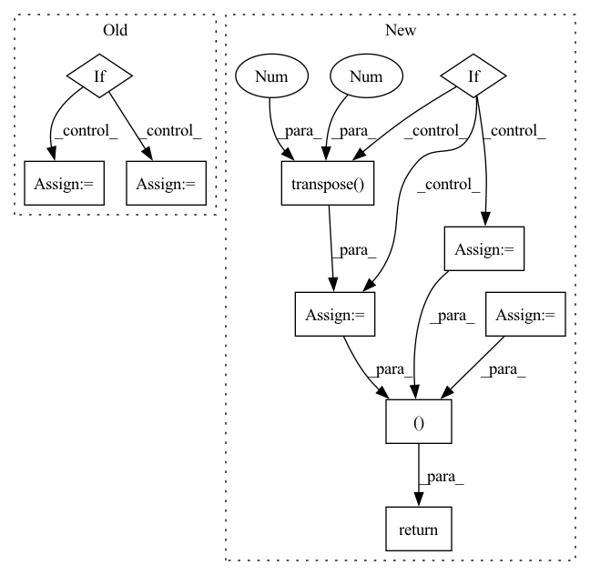

Pattern ID :16982

Before Change
kinetic = (btrace(iAup@Bup) + btrace(iAdown@Bdown))
// reshape
if multiple_op:
kinetic = kinetic.permute(1, 2, 0)
else:
kinetic = kinetic.transpose(0, 1)
return kinetic
After Change
// kinetic terms
op_val_up = btrace(iAup@Bup)
op_val_down = btrace(iAdown@Bdown)
// reshape
if multiple_op:
op_val_up = op_val_up.permute(1, 2, 0)
op_val_down = op_val_down.permute(1, 2, 0)
else:
op_val_up = op_val_up.transpose(0, 1)
op_val_down = op_val_down.transpose(0, 1)
return (op_val_up, op_val_down)
def operator_single_double(self, mo, bop):
Computes the value of any operator on gs + single + double
In pattern: SUPERPATTERN
Frequency: 3
Non-data size: 10
Instances
Fragment ID: 57124518
Project Name: nlesc-jcer/qmctorch
Commit Name: a2e5da93c127893a7d4cff11c6c1c158d90cb38a
Time: 2020-11-18
Author: nicolas.gm.renaud@gmail.com
File Name: qmctorch/wavefunction/pooling/slater_pooling.py
M Class Name: SlaterPooling
N Class Name: SlaterPooling
M Method Name: operator_explicit(3)
N Method Name: operator_explicit(3)
M Parent Class: nn.Module
N Parent Class: nn.Module
M File Name: qmctorch/wavefunction/pooling/slater_pooling.py
N File Name: qmctorch/wavefunction/pooling/slater_pooling.py
M Start Line: 278
M End Line: 301
N Start Line: 278
N End Line: 304
'>
Before Change
adj = adj.T
if isinstance(adj, Tensor):
return dense_to_sparse(adj)
else:
idxs = np.nonzero(adj)
edge_index = np.stack(idxs)
edge_weights = adj[idxs]
return edge_index, edge_weights
After Change
assert 2 <= adj.ndim <= 3
assert adj.shape[-1] == adj.shape[-2]
if backend is torch:
adj = torch.transpose(adj, -2, -1)
index = adj.nonzero(as_tuple=True)
else:
adj = np.swapaxes(adj, -2, -1) // transpose
index = adj.nonzero()
edge_attr = adj[index]
if len(index) == 3:
batch = index[0] * adj.shape[-1]
index = (batch + index[1], batch + index[2])
edge_index = backend.stack(index, 0)
return edge_index, edge_attr
def edge_index_to_adj(edge_index: TensArray,
edge_weights: OptTensArray = None,
'>
Fragment ID: 57124549
Project Name: torchspatiotemporal/tsl
Commit Name: 50089afdf23de12eb6d11e9d5e7e64d949d45611
Time: 2022-08-18
Author: ivan.marisca@hotmail.it
File Name: tsl/ops/connectivity.py
M Class Name: AnonimousClass
N Class Name: AnonimousClass
M Method Name: adj_to_edge_index(2)
N Method Name: adj_to_edge_index(1)
M Parent Class:
N Parent Class:
M File Name: tsl/ops/connectivity.py
N File Name: tsl/ops/connectivity.py
M Start Line: 92
M End Line: 114
N Start Line: 106
N End Line: 145
'>
Before Change
adj = adj.T
if isinstance(adj, Tensor):
return dense_to_sparse(adj)
else:
idxs = np.nonzero(adj)
edge_index = np.stack(idxs)
edge_weights = adj[idxs]
return edge_index, edge_weights
After Change
assert 2 <= adj.ndim <= 3
assert adj.shape[-1] == adj.shape[-2]
if backend is torch:
adj = torch.transpose(adj, -2, -1)
index = adj.nonzero(as_tuple=True)
else:
adj = np.swapaxes(adj, -2, -1) // transpose
index = adj.nonzero()
edge_attr = adj[index]
if len(index) == 3:
batch = index[0] * adj.shape[-1]
index = (batch + index[1], batch + index[2])
edge_index = backend.stack(index, 0)
return edge_index, edge_attr
def edge_index_to_adj(edge_index: TensArray,
edge_weights: OptTensArray = None,
'>
Fragment ID: 57124527
Project Name: torchspatiotemporal/tsl
Commit Name: f28e5a2fddc34eeb90a13c113512c8ab12b6138b
Time: 2022-07-20
Author: ivan.marisca@hotmail.it
File Name: tsl/ops/connectivity.py
M Class Name: AnonimousClass
N Class Name: AnonimousClass
M Method Name: adj_to_edge_index(2)
N Method Name: adj_to_edge_index(1)
M Parent Class:
N Parent Class:
M File Name: tsl/ops/connectivity.py
N File Name: tsl/ops/connectivity.py
M Start Line: 92
M End Line: 114
N Start Line: 106
N End Line: 145